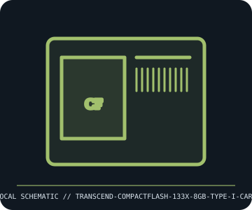

[ REMOVABLE MEDIA // INDIVIDUAL RECORD ]
Transcend CompactFlash 133x 8 GB Type I Card
Transcend TS8GCF133 CompactFlash Type I card. This entry describes the identified medium or reader, not a bundled drive/media pair; exact capacity and compatibility are model- and host-dependent.

IDENTIFICATION: Record the full label, manufacturer part number, revision/date code, format markings, and packaging. Product-family names alone do not identify capacity generation or supported drive.
Format and compatibility
| Catalog subcategory | Flash drives and memory cards |
|---|---|
| Catalog identity | Transcend CompactFlash 133x 8 GB Type I Card |
| Format / era | Transcend TS8GCF133 CompactFlash Type I card |
| Media/device distinction | This record is the removable medium only; the compatible drive is separate and not included. |
| Capacity / interface | Transcend TS8GCF133 8 GB CF Type I flash card, marketed as 133x; CompactFlash parallel ATA-compatible 50-pin interface. 133x is a legacy vendor speed rating (nominal 150 KB/s multiplier), not a guaranteed sustained camera write rate. |
| Compatibility | Fits a Type I or Type II CF slot mechanically; host must support the card’s CF/ATA mode and 8 GB capacity. A CF-to-PC Card adapter does not convert it to SD/CFexpress; firmware, camera file format, and maximum recognized capacity matter. |
| Variant caveat | TS8GCF133 is an older product; the 133x rating and availability/revision can vary. CompactFlash Type I is 3.3 mm thick; Type II is thicker, while CFexpress cards use a different standard and are not compatible. |
Media care and preservation
Avoid bending pins or touching contacts; align the card before insertion and never force it. Protect from static, dust, and moisture. Confirm full-card writes and reads before critical use; keep verified redundant copies because old flash controllers can fail suddenly.
- Preserve original packaging, labels, and acquisition/context notes; photograph both sides and record any write-protect state before use.
- Keep valuable contents in at least two independently verified copies on separate storage. Record a checksum and test a restore; removable media alone is not a preservation plan.
Model and version caveats
TS8GCF133 is an older product; the 133x rating and availability/revision can vary. CompactFlash Type I is 3.3 mm thick; Type II is thicker, while CFexpress cards use a different standard and are not compatible.
Compatibility statements are limited to the named format/model and published host support. Check manufacturer manual, firmware, regional SKU, and media generation before inserting or writing. A similar connector or cartridge shell is not proof of compatibility.
Sources & further reading
- Transcend — CompactFlash 133x product pageManufacturer product-family reference; use the archived TS8GCF133 datasheet/label to verify the exact revision.
- CompactFlash Association — CF specificationsStandards-body reference for CompactFlash interface and format; Type I/II mechanical fit and host mode remain important.
Sources identify the relevant standard, manufacturer, or product family. Where an archived SKU-specific datasheet is unavailable, the exact label/manual and supported host list take precedence over family-level marketing claims.